Machine Learning Researcher (NLP/AI)
My research interests lie broadly at the intersection of Natural Language Processing (NLP) and Recommender Systems (Recsys). I have worked on interactive recommendation and personalized editing for structured and semi-structured or procedural text like cooking recipes. I have also worked on knowledge grounding, text generation, and state tracking / inferring user preferences in open-domain and task-oriented dialogs and conversational agents. I also work on generalizing such models to low-data and zero-shot regimes.
I am currently a 4th year PhD student at UC San Diego, advised by Julian McAuley. Previously, I received my BSE in ORFE from Princeton University in 2016.
Recent Publications
- Dec 2021: Paper Self-Supervised Bot Play for Conversational Recommendation with Justifications preprint available on ArXiv; work w/ Bodhisattwa and Julian.
- Oct 2021: Paper Variable Bitrate Discrete Neural Representations via Causal Self-Attention accepted to the NeurIPS 2021 Workshop on Pre-Registration in ML; work w/ Henry and Julian.
- Apr 2021: Paper SHARE: a System for Hierarchical Assistive Recipe Editing preprint available on ArXiv; work w/ Yufei, Jianmo, and Julian.
- Jan 2021: Paper "Zero-shot Generalization in Dialog State Tracking through Generative Question Answering" accepted to EACL 2021; work from internship at Alexa AI w/ Jin, Mukund, Henry, Daniel, Wael, and Julian.
- Sep 2020: Paper "Interview: Large-scale Modeling of Media Dialog with Discourse Patterns and Knowledge Grounding" accepted to EMNLP 2020; work w/ Bodhisattwa, Jianmo, and Julian.
- July 2020: Wrote a column Recipes for Success: Data Science in the Home Kitchen for Issue 2.3 of the Harvard Data Science Review; work w/ Julian.
- July 2020: Paper Speech Recogntion and Multi-Speaker Diarization of Long Conversations accepted to INTERSPEECH 2020; work w/ Henry, Julian, and Gary.
- Aug 2019: Paper "Generating Personalized Recipes from Historical User Preferences" accepted to EMNLP 2019; work w/ Bodhisattwa, Jianmo, and Julian
Recent News
- Oct 2021: Joined Salesforce Research in Palo Alto (Remote) as a research intern for winter 2021.
- June 2021: Joined Amazon Alexa in NYC (Remote) again as a research intern for summer 2021.
- Sep 2020: Received the 2020 Qualcomm Innovation Fellowship for our proposal on conversational recommender systems.
- June 2020: Joined Amazon Alexa in NYC (Remote) as a research intern for summer 2020.
- June 2019: Joined Google as a summer intern with the Kaggle Datasets team, working on metadata extraction and data discoverability
- June 2019: Our team was selected as one of 10 finalists in the 2019 Alexa Prize! News coverage.
- Sep 2018: Started my PhD at UCSD, studying applied machine learning, recommender systems and NLP under Prof. Julian McAuley
- June 2017: Joined Bloomberg LP as a Senior Software Engineer in the Structured Products Waterfall team
- July 2016: Joined Goldman Sachs as a Technology Analyst in the Operations Automation and Analytics team
- June 2016: Graduated from Princeton University with a BSE in Operations Research and Financial Engineering

Research and Experience
My research focuses on the intersection of natural language processing (NLP) and recommender systems. I explore personalization in natural language generation and question-answering, subjectivity in knowledge bases, and mining the wealth of data available publicly online. My previous research includes structured text generation, sentiment analysis, and spatial clustering in neuroscience.
I also focus on extracting large-scale, useful and interesting datasets from publicly available sources to analyze and make available for research. I make these datasets public alongside the papers that first make use of them at my Kaggle page.
I have been a PC/reviewer for conferences and workshops including: ICLR, WWW, NeurIPS, EMNLP, AAAI, KDD, and ICML
Selected reseach projects below. For a complete list, see my Google Scholar page.
Quick links to sections: publications, work experience, other projects.
| 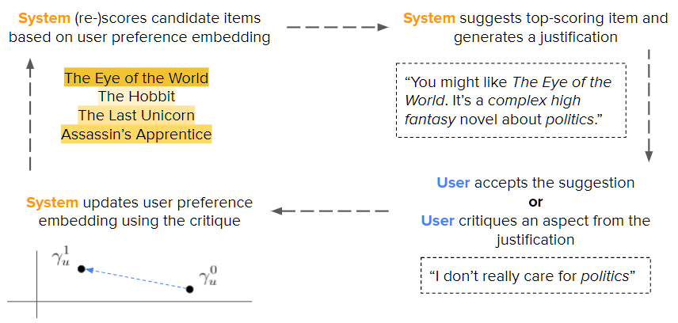 |
Self-Supervised Bot Play for Conversational Recommendation with Justifications
We introduce a framework for training interactive recommender systems for multi-turn conversational recommendation using self-supervised bot-play predicated on review data. We demonstrate via experiments on three real-world datasets that our method is model-agnostic and allows simple matrix factorization and linear recommender systems to out-perform state-of-the-art existing techniques for conversational recommendation. |
 |
SHARE: a System for Hierarchical Assistive Recipe Editing
We introduce SHARE: a System for Hierarchical Assistive Recipe Editing to assist home cooks with dietary restrictions---a population under-served by existing cooking resources. Our hierarchical recipe editor makes necessary substitutions to a recipe’s ingredients list and re-writes the directions to make use of the new ingredients. We show that recipe editing is a challenging task that cannot be adequately solved with human-written ingredient substitution rules or straightforward adaptation of state-of-the-art models for recipe generation. |
| 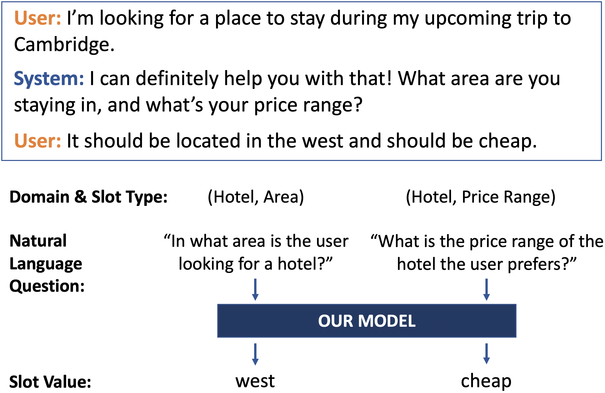 |
Zero-shot Generalization in Dialog State Tracking through Generative Question Answering
We introduce a novel ontology-free framework that supports natural language queries for unseen constraints and slots in multi-domain task-oriented dialogs. Our approach is based on generative question-answering using a conditional language model pre-trained on substantive English sentences. Our model improves joint goal accuracy in zero-shot domain adaptation settings by up to 9\% (absolute) over the previous state-of-the-art on the MultiWOZ 2.1 dataset. |
| 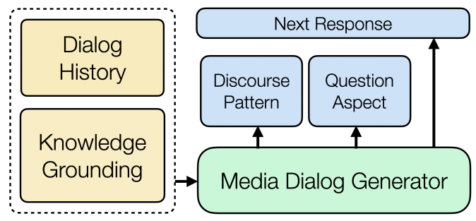 |
Interview: Large-scale Modeling of Media Dialog with Discourse Patterns and Knowledge Grounding
We perform the first large-scale analysis of discourse in media dialog and its impact on generative modeling of dialog turns, with a focus on interrogative patterns and use of external knowledge. We introduce Interview—a large-scale (105K conversations) media dialog dataset collected from news interview transcripts—which allows us to investigate such patterns at scale. |
| 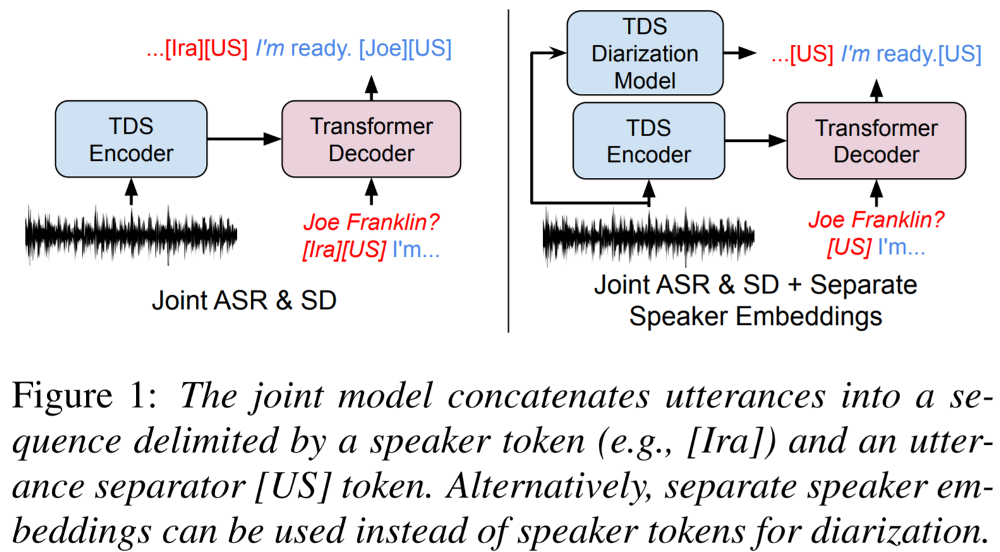 |
Speech Recognition and Multi-Speaker Diarization of Long Conversations
We compare separate and joint frameworks for speech recognition (ASR) and speaker diarization in a multi-speaker setting, showing that joint models can perform well in settings without known utterance bounds. We release a dataset to support multi-speaker ASR and diarization, drawn from a weekly radio program: This American Life. |
| 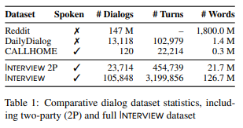 |
Interview: A Large-Scale Open-Source Corpus of Media Dialog
We introduce a large-scale dataset of media dialog: interview-style transcripts from NPR talk shows. We demonstrate its usefulness for dialog modeling and its special traits and dialog structure when compared to existing small-scale spontaneous dialog transcriptions and written proxies for conversation. |
| 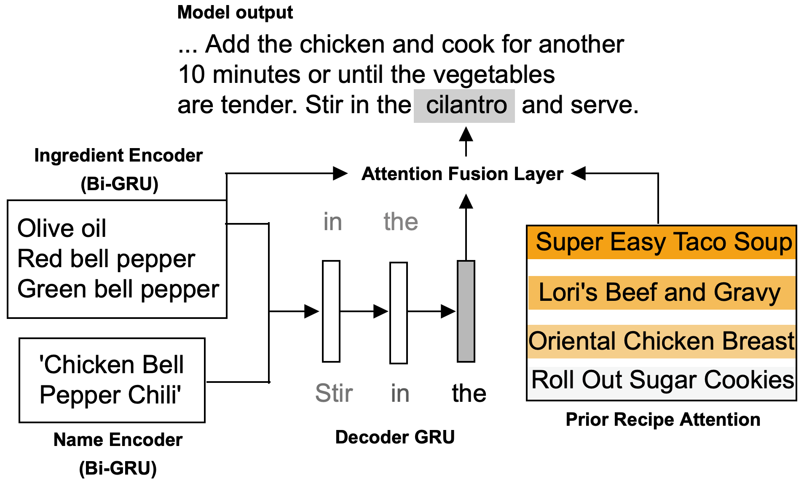 |
Generating Personalized Recipes from Historical User Preferences
We propose the task of personalized recipe generation: expanding a name and incomplete ingredient details into a complete natural-text recipe instruction set, aligned with a user's historical preferences; we present a model that attends on user activity traces to solve this task. |
| 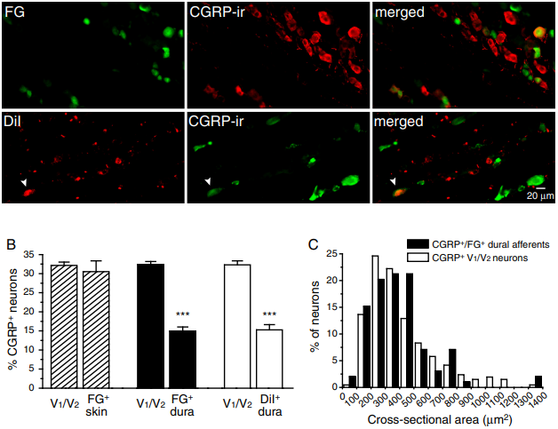 |
Expression of the transient receptor potential channels TRPV1, TRPA1 and TRPM8 in mouse trigeminal primary afferent neurons innervating the dura
We study the size and clustering of TRP-channel expressing neurons in the trigeminal dura. Our results suggest that TRPV1 and TRPA1 but not TRPM8 channels likely contribute to the excitation of dural afferent neurons and the subsequent activation of the headache circuit. These results provide an anatomical basis for understanding further the functional significance of TRP channels in headache pathophysiology. |
 |
Amazon Alexa: Alexa Natural Language Understanding
Concept-centric Pre-training for Language Modeling (June 2021 - October 2021)
Generalizable Dialog State Tracking (June 2020 - October 2020) |
 |
Google Cloud AI: Kaggle
Dataset Categorization and Search (June 2019 - September 2019) |
|
Bloomberg: Structured Products
Data Quality Control Platform (June 2017 - September 2018)
Semi-Structured Text Clustering for Securities (June 2017 - September 2018) |
|
 |
Goldman Sachs: Operations Analytics Strats
Machine Learning Platform as a Service (July 2016 - June 2017)
FIX Market Data Pipeline (July 2016 - August 2017) |
|
Goldman Sachs: Operations Analytics Strats
Automated Invoice Recognition and Extraction (June 2015 - August 2015)
Workflow Assignment through Mixed Integer Linear Programming (June 2015 - August 2015) |
| 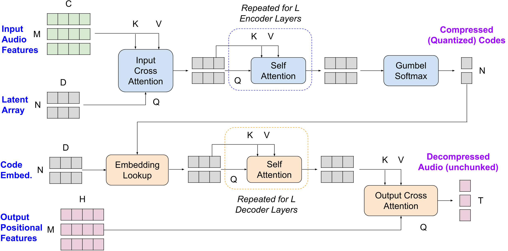 |
Variable Bitrate Discrete Neural Representations via Causal Self-Attention
Generative modeling across text, video, and image domains has benefited from the introduction of discrete (quantized) representations for continuous data. We aim to learn a single model able to produce discrete representations at different granularities (bitrates). We propose a framework based on the Perceiver IO architecture, incorporating causal attention to learn ordered latent codes that can then be adaptively pruned to a target compression rate. |
| 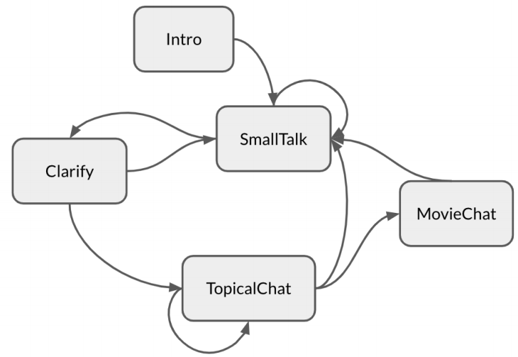 |
Bernard: A Stateful Neural Open-domain Socialbot
We propose Bernard: a framework for an engaging open-domain socialbot. We explore various strategies to generate coherent dialog given an arbitrary dialog history. We incorporate a stateful autonomous dialog manager using non-deterministic finite automata to control multi-turn conversations. |
| 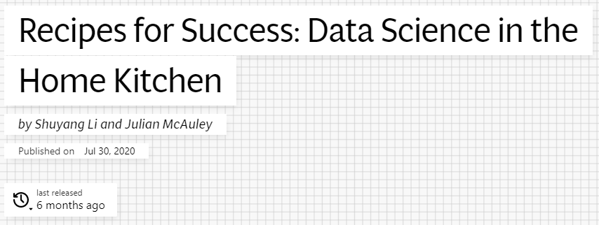 |
Recipes for Success: Data Science in the Home Kitchen
We survey the history of data science and machine learning methods to assist home cooks find and make nutritious, delicious meals. This article explores domains including recipe recommendation, recipe generation, image-to-recipe retrieval, and assistive technologies that integrate with the cooking process. |
| 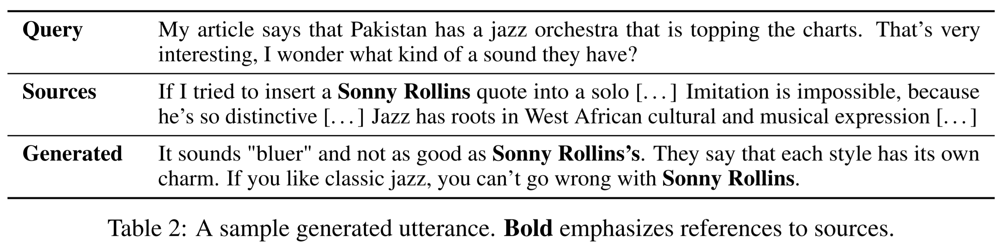 |
Generating Factual Documents by Synthesizing Knowledge Sources
We propose a knowledge-grounded document writing task for pre-training an encoder-decoder language model to enable such knowledge synthesis. We will pre-train a model on networks of knowledge-grounded documents from encyclopedias and news, leveraging high quality source citations common in these fields |
| 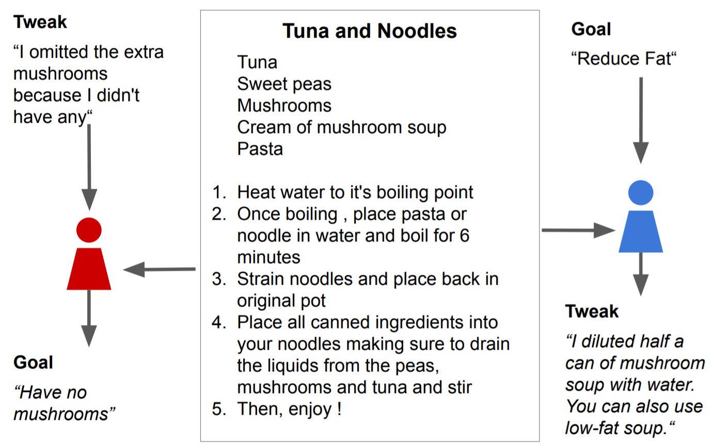 |
Cooking Common Sense: Personalized Recipe ‘Tweak’ Inference via Common Sense Reasoning
We propose the task of personalized tweak selection modeled as both entailment of a tweak from a recipe and activity traces, as well as a generative task. We collect a dataset of 72K tweaks linked to the Food.com dataset from our EMNLP 2019 publication on personalized recipe generation. We also propose a framework for collecting such tweaks via crowd-sourcing. |
| 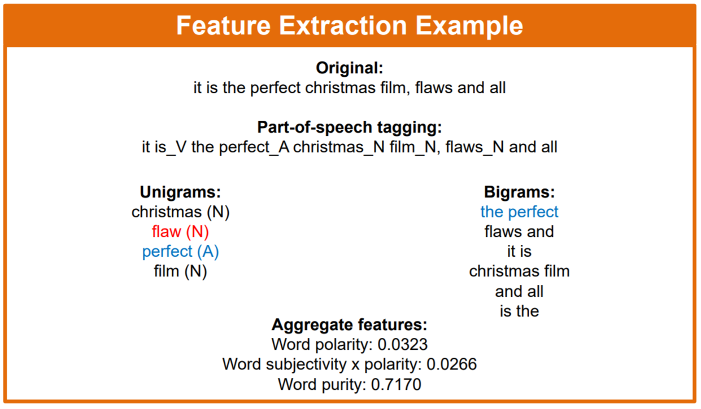 |
Exploring Rich Features for Sentiment Analysis with Various Machine Learning Models
This was my senior thesis at Princeton University, supervised by Dr. Xiaoyan Li. Here, we investigate the use of rich features to extend the bag-of-words model for sentiment analysis using machine learning in the movie review domain. We focus on subjectivity analysis and sentence position features. In addition, I created a manually labeled set of subjective and summary sentences for 2000 reviews in the Cornell IMDB movie review corpus. |
|
Learning Rate Analysis for Temporal-Difference Learning
The objective was to find optimal policies in an energy allocation problem. The model contained a battery, power grid, wind energy, and demand, with the latter three stochastic variables. I investigated the performance of Q-Learning and SARSA given different learning rates. |
{kind=link}

Projects
The End of the World
Top-Down Exploration Game
A simple game inspired by Haruki Murakami's Hard-Boiled Wonderland and the End of the World. Move around the world with the arrow keys.
Maze Generator and Explorer
Cellular Automaton
Using cellular automata to generate mazes. Allows customization of maze dimensions and visualizations. Solve the maze with arrow keys. Contains an auto-solver feature.
Cellular Automaton Sandbox
Cellular Automaton
Set a beginning configuration and a ruleset, and allow a cellular automaton to grow. Allows flipping of grid squares as the automaton is running, as well as customization of run speed and canvas dimensions.
Cookie Crumbler
Game
Break cookies into different-sized pieces to feed a friendly colony of ants, as they're constantly harrassed by locusts. Experiment with HTML5 canvas.
Incremental Adventure
Incremental Game
Dabbling in development of an incremental RPG. Progress through an infinite dungeon and collect party members and upgrade your gear.
Data Quality Control Platform (2017-)
Distributed Computing
In my work with the Structured Products team (Mortgage Waterfall Infrastructure), I helped to design and implement a Spark-based infrastructure for high bandwidth data processing jobs. We wrote a series of applications to wrap common data-access, filtering, and testing paradigms, so other members of the Structured Products group could write test logic as a self-contained plugin and farm the job out to our Spark cluster. We achieved a 100x+ speedup for some jobs due to parallelization, and abstracted away Spark application boilerplate.
The platform infrastructure was written in Python with jobs distributed via pySpark.
Identifying Similar Securities (2017-)
Semi-structured Text Clustering
As part of my work with the Quality Control team in Mortgage Waterfall Infrastructure, I am currently investigating how various mortgage-backed securities (pools, generics, CMOs) can be clustered by the shape of the data we regularly receive for each security. This entails identifying data shape features for semi-structured text data received for over 2.5 million securities and clustering on time-series data for each security.
The application was written in Python, using Spark MLlib library for feature processing and clustering, and PostgreSQL to store time series data, accessed programmatically via SQLAlchemy. The application utilizes the infrastructure framework developed as part of the Data QC Platform.
Machine Learning Platform (2016-2017)
Distributed ML Platform
This was my primary project in Ops Analytics Strats (OAS), in the Operations Technology group at Goldman Sachs. Over the course of 10 months, we built a platform for data science and machine learning on top of the firm's centralized data store. Our goal was to allow anybody to classify and regress on arbitrary datasets without needing a deep background in programming for machine learning. One client was an internal data platforms team, which used our platform to better predict expected runtimes for their data ingestion workflow.
The platform infrastructure was written in Java. For machine learning, we used Spark MLlib and R.
Market Data Pipeline (2016)
FIX Message Parsing
This was the project team I worked on for Grey Wolf on Goldman Sachs Asset Management - Fixed Income (GSAM FI) as a new Technology Analyst in the fall of 2016. Over 6 weeks, our team built a system to consume FIX messages from several marketplaces, parse them into a standardized object, and store the messages in a database. Our application allowed the GSAM FI team to consume a vastly greater quantity of market messages and made it available for further analysis by traders. It is currently a production system.
The application was written in Java, using the QuickFIX/J library for FIX message decoding.
Automated Invoice Recognition (2015)
Optical Character Recognition
This was my main project as a Summer Technology Analyst in Operations Analytics Strats. We worked with Accounting Services to build a tool that could automatically index certain values from images of invoices. They received invoices through email or fax and scanned them into .tiff files. Our algorithm relied on segmentation of individual values to produce structured output and templating to identify likely segment locations.
The program was written in Python, using the numpy library for fast array operations and scikit-image library for image processing. We used the Tesseract open-source OCR engine.
Workflow Assignment (2015)
Mixed Integer Linear Programming
This was another project that I worked on as a Summer Technology Analyst in Operations Analytics Strats. We worked with several different Operations groups to produce a tool for automatically assigning tasks to available analysts. This took into account available analysts, their expected bandwidth for the remainder of the day, their proficiency with incoming tasks, and implemented a Maker-Checker process. The tool is to be run by managers, and outputs a list of each person's assignments as well as a list of unassigned tasks with reasoning listed.
The program was written in R, using the Rglpk library for linear programming.
Rich Features for Sentiment Analysis (2015-6)
Natural Language Processing
This was my senior thesis at Princeton University, supervised by Dr. Xiaoyan Li. Here, we investigate the use of rich features to extend the bag-of-words model for sentiment analysis using machine learning in the movie review domain. We focus on subjectivity analysis and sentence position features. In addition, I created a manually labeled set of subjective and summary sentences for 2000 reviews in the Cornell IMDB movie review corpus. The full title of the thesis is Exploring Rich Features for Sentiment Analysis with Various Machine Learning Models.
All model training and execution were performed in Python, using NLTK and TextBlob for document parsing and feature extraction, and scikit-learn for machine learning algorithms. Data analysis was done in R.
Documents: Poster presented at the 2016 IEEE MIT Undergraduate Research Technology Conference. A full copy of the thesis may be requested via Princeton DataSpace. You can also download a .7z archive of my manually labeled movie reviews.
Career Imagineers (2015)
Social Impact
I worked on this semester-long project in Junior year of college for EGR 392 - Creativity, Innovation, and Design. We helped the campus career center provide resources for career exploration and preparation in a way that was better suited for the undergraduate population. We created a regular mentorship program for underclassmen and upperclassmen who had experience with various research and industry roles. We also held a well-attended career exploration workshop on campus.
The team consisted of Grace Chang '17, Catherine Idylle '16, Jean Choi '15, Maggie Zhang '16, Annie Chen '15, and myself.
Documents: Presentation given to the EGR 392 class, as well as administrators of Princeton career services.
Los Angeles Freeway Pricing (2014)
Optimal Learning
This was a project that I worked on for ORF 418: Optimal Learning in Spring 2014. I worked with Max Kaplan. We created an algorithm for pricing Express Lanes on the I-110 Freeway using Optimal Learning techniques. Specifically, we tested the Knowledge Gradient, Interval Estimation, Pure Exploitation, and Constrained Exploration algorithms with linear and logistic belief models.
Code and graphics done in MATLAB.
Documents: Project Report, Project Presentation